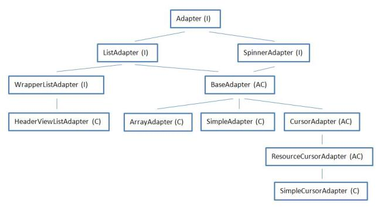
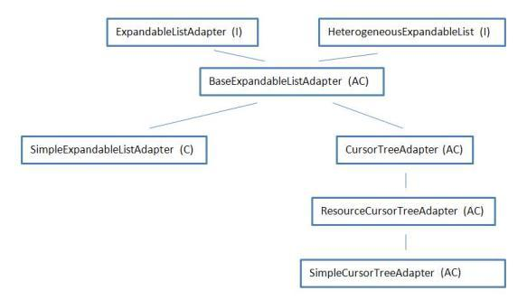

В этом уроке:
- разбираемся в адаптерах
На последних уроках мы использовали адаптеры и сейчас вполне можем сформулировать, что это такое. Адаптер – мост между набором данных и объектом, использующим эти данные. Также адаптер отвечает за создание View-компонента для каждой единицы данных из набора.
Я по себе помню, что новичку непросто разобраться в адаптерах. Кажется, что их куча и абсолютно непонятно какой и где используется. И рассказывать об этом без практики – бессмысленно. Поэтому в своих уроках я сначала рассмотрел пару примеров, чтобы в голове сложилась схема использования: набор данных – адаптер – объект. И теперь проще будет разобрать, какие еще адаптеры есть и чем они отличаются.
В рассмотренных нами примерах были:
- адаптер ArrayAdapter и объект для отображения данных ListView
- адаптер SimpleExpandableListAdapter и объект ExpandableListView.
Я попробую в этом материале сделать обзор адаптеров и показать, чем они отличаются друг от друга. Материал будет периодически обновляться и пополняться. А пока я накидал схему java-иерархии интерфейсов и классов адаптеров. В скобках указываю тип: I – это интерфейс, AC – абстрактный класс, C – класс. Линии – это наследование. Читать следует сверху вниз.

Давайте по порядку смотреть, зачем оно все нужно.
Интерфейс Adapter. Описывает базовые методы, которые должны содержать адаптеры: getCount, getItem, getView и пр.
Интерфейс ListAdapter. Этот интерфейс должен быть реализован адаптером, который будет использован в ListView (метод setAdapter). Содержит описание методов для работы с разделителями(separator) списка.
Интерфейс SpinnerAdapter. Адаптеры, реализующие этот интерфейс, используются для построения Spinner(выпадающий список или drop-down). Содержит метод getDropDownView, который возвращает элемент выпадающего списка. На офиц.сайте есть пример использования.
Интерфейс WrapperListAdapter. Адаптеры, наследующие этот интерфейс используются для работы с вложенными адаптерами. Содержит метод getWrappedAdapter, который позволяет вытащить из основного адаптера вложенный. Чуть дальше поясню.
Класс HeaderViewListAdapter. Готовый адаптер для работы с Header и Footer. Внутри себя содержит еще один адаптер (ListAdapter), который можно достать с помощью выше рассмотренного метода getWrappedAdapter из интерфейса WrapperListAdapter.
Абстрактный класс BaseAdapter. Содержит немного своих методов и реализует методы интерфейсов, которые наследует, но не все. Своим наследникам оставляет на обязательную реализацию методы: getView, getItemId, getItem, getCount из ListAdapter. Т.е. если хотите создать свой адаптер – это класс вам подходит.
Класс ArrayAdapter<T>. Готовый адаптер, который мы уже использовали. Принимает на вход список или массив объектов, перебирает его и вставляет строковое значение в указанный TextView. Кроме наследуемых методов содержит методы по работе с коллекцией данных – add, insert, remove, sort, clear и метод setDropDownViewResource для задания layout-ресурса для отображения пунктов выпадающего списка.
Класс SimpleAdapter. Также готовый к использованию адаптер. Принимает на вход список Map-объектов, где каждый Map-объект – это список атрибутов. Кроме этого на вход принимает два массива – from[] и to[]. В to указываем id экранных элементов, а в from имена(key) из объектов Map, значения которых будут вставлены в соответствующие (из from) экранные элементы.
Т.е. SimpleAdapter – это расширенный ArrayAdapter. Если вы делаете ListView и у вас каждый пункт списка содержит не один TextView, а несколько, то вы используете SimpleAdapter. Кроме наследуемых методов SimpleAdapter содержит методы по наполнению View-элементов значениями из Map – setViewImage, setViewText, setViewBinder. Т.е. видим, что он умеет работать не только с текстом, но и с изображениями. Метод setViewBinder – отличная штука, позволяет вам написать свой парсер значений из Map в View-элементы и адаптер будет использовать его. Это мы еще детально обсудим в дальнейших уроках.
Также содержит реализацию метода setDropDownViewResource.
Абстрактный класс CursorAdapter. Реализует абстрактные методы класса BaseAdapter, содержит свои методы по работе с курсором и оставляет наследникам методы по созданию и наполнению View: newView, bindView.
Абстрактный класс ResourceCursorAdapter. Содержит методы по настройке используемых адаптером layout-ресурсов. Реализует метод newView из CursorAdapter.
Класс SimpleCursorAdapter. Готовый адаптер, похож, на SimpleAdapter. Только использует не набор объектов Map, а Cursor, т.е. набор строк с полями. Соответственно в массив from[] вы заносите наименования полей, значения которых хотите вытащить в соответствующие View из массива to.
Содержит метод convertToString, который возвращает строковое значение столбца, который задается методом setStringConversionColumn. Либо можно задать свой конвертер методом setCursorToStringConverter и адаптер будет использовать его при вызове convertToString. В этом конвертере вы уже сами реализуете, что он будет возвращать.
Итого мы получили 4 готовых адаптера: HeaderViewListAdapter, ArrayAdapter<T>, SimpleAdapter, SimpleCursorAdapter. Какой из них использовать - решать вам. Если у вас есть массив строк - то, не раздумывая, берете ArrayAdapter. Если работаете с БД и есть курсор, данные из которого надо вывести в список - используете SimpleCursorAdapter.
Если же эти адаптеры вам не подходят, есть набор абстрактных классов и интерфейсов, которые можем наследовать и реализовать в своих классах для создания своего адаптера. Да и готовые адаптеры всегда можно наследовать и сделать свою реализацию методов.
Кроме этой иерархии есть почти аналогичная ей. В ней содержатся адаптеры для работы с деревом – ExpandableListView. Я не буду здесь их расписывать, в целом они похожи на, уже рассмотренные, нами объекты. Но есть разница в том, что здесь данные не одноуровневые, а делятся на группы и элементы.

Здесь мы видим один готовый адаптер. SimpleExpandableListAdapter - работает с коллекциями Map.
Если вам интересны примеры работы того или иного адаптера – пишите на форуме в ветке этого урока (ссылка внизу страницы). Ближайшие несколько уроков будут посвящены этой теме.